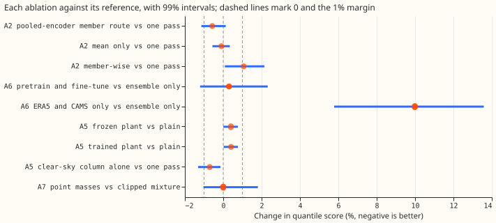
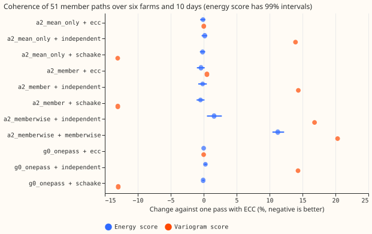
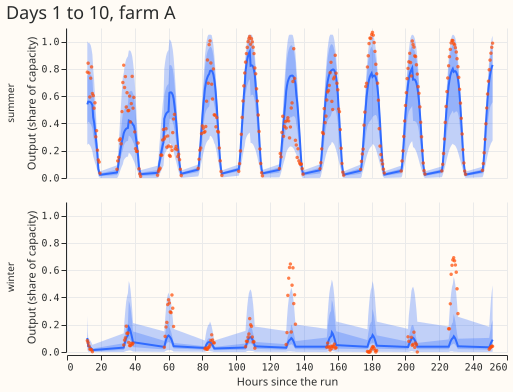

Which of four design differences does a pooled mixture-density network for the six metered solar farms need: ensemble members passed one by one, a PyTorch plant inside the network, ERA5 and CAMS pretraining, and point masses at zero and at capacity?
A one-pass neural network on the ensemble mean and spread is not beaten by any richer design we tested for the six metered solar farms. National Grid Electricity Distribution (NGED) meters the farms, which are labelled A to F here. A 51-member ensemble weather forecast ("the ensemble") drives every network. We tested four design differences, each against its reference: passing the 51 ensemble members through an encoder (stage A2), adding a plant model inside the network (A5), pretraining on estimates of past weather from the ERA5 reanalysis and the CAMS irradiance product (A6), and adding point masses at zero and at capacity to the output (A7). G0 is the check that the shared code reproduces experiment 345's network. The encoder is 0.22% better at days 3 to 10 over six seeds (99% interval −0.60% to +0.18%), which is inside the seed noise. The plant model is 0.4% worse at days 6 to 10. Pretraining followed by fine-tuning is 0.30% worse (−1.21% to +2.32%), and point masses are 0.002% worse (−1.03% to +1.80%). The A6 and A7 intervals are wider than the 1% margin, so the pre-registered rule selects the one-pass network without either addition. The only difference with an interval that excludes zero on the favourable side is the clear-sky irradiance input column: it improves the score by 0.42% at days 6 to 10 over six seeds (−0.88% to −0.03%), under the margin.
For coherent member paths, a Schaake shuffle of the one-pass network's quantiles beats ensemble copula coupling on the variogram score. NGED's power-flow modelling needs 51 member paths that are coherent across time and across the six farms. The Schaake shuffle ranks the 51 quantiles of each half-hour by 51 observed paths from about a year earlier. It lowers the variogram score by 13.0% (−15.9% to −9.5%) against ensemble copula coupling (ECC, which ranks the quantiles by each member's shortwave radiation), and leaves the energy score over the whole 10 days unchanged (−0.08%, −0.22% to +0.10%). Passing each ensemble member through the network alone gives paths whose energy score is 11.3% worse and whose variogram score is 20.3% worse. Its marginal quantile score is 1.5% worse over all bands (+0.38% to +2.80%).
Scores are quantile scores in points of capacity (lower is better), farm-equal means over
experiment 310's scored year. The G0 check passed: g0_onepass matches experiment 345's
solar_pooled network to machine precision in every band (differences below 1e-13%), because the
shared code with every addition switched off runs the same recipe with the same seeds.
Results
Quantile score by arm
Three seeds, except g0_onepass (five seeds in its G0 check; the A2, A5, and A7 contrasts use seeds
0 to 2 unless stated).
| Arm | All bands | Day 1 | Days 3 to 10 |
|---|---|---|---|
g0_onepass (one pass; experiment 345's recipe) |
6.842 | 5.350 | 7.182 |
a2_mean_only (spread input dropped) |
6.841 | 5.372 | 7.175 |
a2_member (51-member encoder) |
6.810 | 5.356 | 7.141 |
a2_memberwise (members passed one at a time) |
6.945 | 5.561 | 7.259 |
a5_plain (one pass plus clear-sky input column) |
6.798 | 5.329 | not computed |
a5_frozen (a5_plain plus frozen plant channel) |
6.833 | 5.368 | not computed |
a5_e2e (a5_plain plus trained plant channel) |
6.834 | 5.369 | not computed |
a6_ens_only (ensemble only, fixed standardiser) |
6.850 | 5.356 | not computed |
a6_finetune (pretrain, then fine-tune) |
6.870 | 5.389 | not computed |
a6_pretrain_only (ERA5 and CAMS only) |
7.534 | 5.751 | not computed |
a7_atoms (point masses) |
6.843 | 5.362 | not computed |
"Day 1" is the 12 to 36 hour band, and "all bands" is days 1 to 10. Over six seeds, g0_onepass
scores 6.830 over all bands, against 6.799 for experiment 310's blend: the difference is +0.45%
(−1.03% to +2.15%).

Figure 1. Percentage change in quantile score for each ablation against its reference, with 99% month-block intervals, at three seeds. The row set is the stage's own (days 3 to 10 for A2, days 6 to 10 for A5, all bands for A6 and A7). The dashed lines mark 0 and the 1% margin; negative is better.
Each prediction against its result
- G0 passed. The difference to experiment 345 is below 1e-13% in every band.
- A2 failed. The encoder beat one pass by 0.57% at days 3 to 10 on three seeds (−1.14% to
+0.13%) and by 0.22% on six seeds (−0.60% to +0.18%), against a predicted 2%. The six-seed minimum
detectable effect (from the spread between seeds) is 0.58% for this arm. Dropping the spread input
(
a2_mean_only) changes the score by −0.10% (−0.56% to +0.34%). The member-wise arm is 1.07% worse at days 3 to 10 (+0.08% to +2.14%) and 3.9% worse at day 1. - A6 failed. Pretraining followed by fine-tuning is 0.30% worse than the ensemble-only arm over all bands (−1.21% to +2.32%), against a predicted gain of at least 1%. The three fine-tuned seeds spread widely (standard deviation 0.092 points), so the minimum detectable effect is 2.1% (0.18% for the ensemble-only arm and 0.14% for the ERA5-and-CAMS-only arm), and a gain below 2.1% cannot be ruled out. The ERA5-and-CAMS-only arm is 9.99% worse (+5.78% to +13.58%) over all bands and 7.4% worse at day 1.
- A5 failed. The frozen plant channel is 0.40% worse than
a5_plainat days 6 to 10 (+0.004% to +0.76%) and 0.74% worse at day 1 (−0.11% to +1.55%). The trained plant is 0.41% worse at days 6 to 10 (+0.02% to +0.76%), the same as the frozen plant. - A7 met its tail-harm limit and did not move the coverage. Against
g0_onepass, the 0.01 pinball loss is 0.017 points lower and the 0.99 pinball loss is 0.008 points higher (the limit is 0.02 points). The coverage of the 0.99 quantile rises from 0.9834 to 0.9887 (target 0.99). The coverage of the 0.01 quantile moves from 0.0532 to 0.0513 (target 0.01), so that quantile still covers about 5% of observations. The score is unchanged.
The clear-sky column improves the one-pass network by a little. The a5_plain arm adds the
clear-sky irradiance (the radiation under a cloudless sky, from the sun's position) as an input
column so that the plant arms differ from it only by the plant channel. The column alone improves on
the one-pass network by 0.71% at days 6 to 10 on three seeds (−1.31% to −0.14%) and by 0.42% on six
seeds (−0.88% to −0.03%). The six-seed minimum detectable effect is 0.37%, so the estimate is just
above seed noise.
The plant result may not be comparable with experiment 313's. Experiment 313 found a 3.4% gain from a plant at days 8 to 10. The audit found two differences. Experiment 430 uses experiment 345's input columns, which have none of experiment 313's plant, plant-spread, or lag columns. Its plant also has one pooled scale at tilt 20 degrees, where experiment 310's has a scale per farm at tilt 35 degrees. The audit also found that the plant is nearly a function of inputs the network already has: the plant's error is only 1% to 3% below that of the ensemble shortwave radiation alone. We did not re-run experiment 313's design, so we cannot say why the gains differ.
Coherence of the 51 member paths
The Schaake shuffle lowers the variogram score by 13% on both the one-pass and the encoder marginals. The reference is the one-pass network with ECC. The energy score separates the routes little, because the marginal accuracy dominates it. The variogram score separates them clearly. The energy score is the mean distance of the 51 member paths to the observed path, minus half the mean distance between members. The variogram score compares the observed and the ensemble-mean differences between pairs of half-hours at the same farm up to 6 hours apart, and between farms at the same time.
| Arm and route | Energy score vs reference | Variogram score vs reference |
|---|---|---|
| One pass, ECC (reference) | 0 | 0 |
| One pass, Schaake shuffle | −0.08% (−0.22% to +0.10%) | −13.0% (−15.9% to −9.5%) |
| One pass, independent draws | +0.26% (+0.11% to +0.47%) | +14.3% (+4.8% to +27.7%) |
| Encoder, ECC | −0.40% (−1.03% to +0.15%) | +0.5% (−0.1% to +1.2%) |
| Encoder, Schaake shuffle | −0.48% (−1.08% to +0.12%) | −13.0% (−15.9% to −9.5%) |
| Member-wise, own paths | +11.25% (+10.43% to +12.21%) | +20.3% (+16.3% to +23.9%) |
| Member-wise, independent draws | +1.58% (+0.50% to +2.75%) | +16.8% (+6.5% to +32.5%) |
Rows cover the six farms and 10 days jointly. In each separate day band, the Schaake shuffle lowers the energy score too: by 0.89% at day 1 (−1.06% to −0.73%).

Figure 2. Energy score (with 99% intervals) and variogram score of each route against one pass with ECC, over six farms and 10 days jointly. Negative is better. The variogram intervals are in the table.
- The member-wise paths score worse than independent draws on the energy score. The energy score is 11.25% worse for the member-wise paths and 1.58% worse for independent draws of the same marginal. On the variogram score the two intervals overlap. Each member is drawn at one fixed quantile level, so a member's path is one level of that member's own distribution and not a coherent trajectory.
- The encoder does not change the coherence ranking. Its energy-score gain of 0.4% to 0.5% is inside the intervals.
Per-member quantiles
Each member's own quantiles score almost as well as the equal-weight mixture of the 51 members. NGED's proposed deliverable is a 51-member power ensemble in which each member is a quantile forecast. We scored each member's 11 quantiles alone against the observation, and the mixture of the 51 members, for the member-wise arm.
| Level | Coverage, one member | Coverage, mixture | Pinball loss, one member | Pinball loss, mixture |
|---|---|---|---|---|
| 0.01 | 0.0323 | 0.0321 | 0.355 | 0.355 |
| 0.05 | 0.0625 | 0.0614 | 1.517 | 1.514 |
| 0.25 | 0.2608 | 0.2590 | 5.210 | 5.188 |
| 0.50 | 0.4919 | 0.4913 | 6.682 | 6.651 |
| 0.75 | 0.7350 | 0.7370 | 5.023 | 4.995 |
| 0.95 | 0.9411 | 0.9433 | 1.382 | 1.375 |
| 0.99 | 0.9855 | 0.9864 | 0.323 | 0.322 |
Pinball loss is in points of capacity, a row-weighted mean over seeds 0 to 2 (the Tails table below uses farm-equal means, so the two tables differ). A single member's quantiles score within 0.6% of the mixture at every level. The member-wise training is the likely cause: the network sees one random member with the spread input set to zero, so each member's distribution already carries the ensemble spread. We did not test this.
Tail quantiles
The 0.01 quantile covers 5% to 7% of observations in every arm, against a target of 1%. The tail-harm limit of 0.02 points holds against each arm's own reference, except for the ERA5-and-CAMS-only arm, which is 0.11 points worse at the 0.01 pinball loss and 0.16 points worse at the 0.99 pinball loss than the ensemble-only arm. The coverage of the 0.99 quantile is between 0.963 and 0.989.
| Arm | 0.01 pinball | 0.99 pinball | Coverage of 0.01 | Coverage of 0.99 | Median minus mean (points) |
|---|---|---|---|---|---|
g0_onepass |
0.343 | 0.336 | 0.0532 | 0.9834 | −0.025 |
a2_member |
0.339 | 0.336 | 0.0522 | 0.9848 | −0.072 |
a2_memberwise |
0.338 | 0.333 | 0.0524 | 0.9871 | −0.360 |
a6_finetune |
0.331 | 0.350 | 0.0514 | 0.9868 | −0.013 |
a6_pretrain_only |
0.456 | 0.493 | 0.0667 | 0.9632 | +0.061 |
a5_plain |
0.337 | 0.335 | 0.0524 | 0.9850 | −0.071 |
a7_atoms |
0.326 | 0.344 | 0.0513 | 0.9887 | +0.108 |
Farm-equal means over all bands, three seeds. The a6_ens_only reference has 0.345 and 0.335.
Example forecasts

Figure 3. One-pass forecasts of farm A for the 12 to 36 hours after a summer run and a winter run. Bands show the 25% to 75% and 5% to 95% quantiles; the dots are the observed output.

Figure 4. The same two runs over days 1 to 10.
Checks
- Median minus mean forecast, per farm. Averaged over all rows, the median forecast sits 0.39 to
0.83 points of capacity above the mean forecast at each farm, for the one-pass, encoder,
a5_plain, and point-mass arms. Averaged by month, the difference for the one-pass arm runs from −3.4 to +3.9 points, with the sign set by the season, so the farm-equal, month-equal mean in the Tail quantiles table is near zero. - Mean-forecast error beside the quantile-score contrasts. The mean absolute error of the mean
forecast moves in the same direction as the quantile score for the encoder and for
a5_plain, farm by farm (scores/checks.csv). One farm moves the other way for one arm, by an amount inside the seed noise. - Triggers fired. Of the seven audit triggers in the
ml-experimentskill, trigger 2 fired, because every A-stage prediction failed and the plant result differs from experiment 313's. Triggers 1, 3, 4, 5, and 6 did not fire, and trigger 7 does not apply. The next section gives the audit findings.
Audit
A fresh Sonnet agent re-derived the headline contrasts from the stored forecasts with its own code and tried to break the method.
- Re-derivation: the seven contrasts it re-derived match
scores/headline.csvto four decimals, and the G0 check is bit-identical to experiment 345 on all 410,899 rows. Accepted, no change. - Seed noise is the main risk. Per-seed A2 contrasts run from −0.87% to +0.94%, and per-seed A5 contrasts from −1.31% to +0.36%. The second seed set was run for this reason, and the six-seed figures shrink both effects. Accepted: the page reports six-seed figures for these two arms.
- No leakage, misalignment, or clipping fault: training rows end one day before the refit, the standardiser matches a recompute on data before 2025-08-31, the validation window is the last 61 days, ERA5 and CAMS rows stop before 2024-04-01, and all quantiles lie within the farm's ceiling.
- Plant: it matches experiment 310's NumPy plant at tilt 35 degrees, and a mirrored azimuth scores clearly worse. The plant adds little over the shortwave input.
- Leave-one-farm-out: no sign flips for A2 or A5. Farms C and E carry most of the A2 gain.
- Mean-forecast error: no disagreement with the quantile score that matters, so trigger 3 did not fire.
- Coherence: the pair set, the energy score, and the variogram score match for ECC on one month. The Schaake score differs by 0.016 in energy, from the random fill of about 5% of the missing history, and the Schaake history is at least 340 days old.
- Not checked by the audit: the other three coherence months, the bootstrap intervals, and experiment 313.
Caveats
- The member-wise route counts the spread twice. The network is trained with the spread input set to zero on one member, and the marginal is then the mixture of 51 member distributions, so the spread enters the forecast twice.
- The Schaake shuffle's history is partly random for farm E. Farm E has no observed power a year earlier, so its ranks come from random draws, and the shuffle's gain comes from the five farms that have history.
- The variogram uses pairs up to 6 hours apart at one farm, which misses the gap between one day and the next at night, so it scores the daytime structure only.
- The
a6_*arms have ERA5 rows with a single member. The pretrained network sees no spread there, and the fine-tuning rows are the only ones with a spread. - Seed averaging differs between scores. The marginal score averages the quantiles of the seeds, and the coherence scores average the scores of the seeds' paths.
- The second seed set covers three arms (
g0_onepass,a2_member,a5_plain). The other contrasts use three seeds, and their minimum detectable effects run from 0.14% to 2.1%. - The trained plant's parameters (tilt, azimuth, scale, and clip) were not logged, so we cannot say whether the network used the plant channel.
- The A6 arms for wind were not run. Experiment 429's merged code has no pretraining arm, and the manager deferred them.
Problems caused by the move
None so far.
Question
We test which of four design differences a pooled network for solar farms needs. The Opus design note of experiment 13 proposes one network design for demand, wind, and solar: a mixture density network (MDN) pooled across sites with a learned site embedding, fed the ensemble mean and spread once, and optionally pretrained on ERA5 and CAMS. Each difference between the three forecasters must be justified by an ablation. This experiment is the solar worker's half; the wind worker's half is experiment 429. Here a "farm" is one of the six metered solar farms, labelled A to F.
Design
The four switches are small changes to one network class, and every arm differs from its
reference in exactly one switch. The network is experiment 310's MixtureHead: the standardised
inputs, two hidden layers of 64, and a three-component Gaussian mixture on the capacity-normalised
output. All arms are pooled across the six farms and the six day bands, with experiment 345's 22
input columns (calendar, sun position, ensemble mean and spread of shortwave, beam, diffuse and
temperature, the clear-sky index, the lead in hours, and eight further ensemble variables).
- Member route (A2). A shared encoder (4 channels to 32 to 16) runs on each of the 51 members' shortwave, beam, diffuse, and temperature. The 51 encodings are pooled by mean, standard deviation, 10th and 90th percentile, and joined to the one-pass inputs. The member arm therefore sees everything the one-pass arm sees. All 51 members are used in every training step, which is cheap at this size, so the design note's one-random-member-per-epoch device is not needed.
- Physics layer (A5). A PyTorch copy of experiment 310's fleet plant adds a power channel (on the member mean for one pass, per member for the member route). "Frozen" fixes tilt 20 degrees (experiment 282 found 15 to 20), azimuth 180 degrees, and a scale fitted by least squares on the training rows; "end to end" also learns tilt, azimuth, scale, and clip. The plain arm adds the clear-sky irradiance as a column so that the arms differ only by the plant channel.
- Pretraining (A6). Pretrain on the farms' ERA5 and CAMS history before 2024-04-01 (about 153,000 half-hours at five farms; farm E has none), then fine-tune all weights on the ensemble rows with half the learning rate. Columns the history lacks (eight ensemble variables and the spread) are 0 after standardisation, the lead is drawn uniformly from 12 to 252 hours, and every member is the same ERA5 value. One standardiser, fitted on ensemble rows before 2025-08-31, serves every refit of every A6 arm, including the ensemble-only control.
- Coherent members (A2). NGED's power-flow modelling runs one ensemble member at a time, so the forecast must give 51 member paths that are coherent across time and across the six farms. Four routes give paths. (i) The one-pass forecast with ensemble copula coupling (ECC): the member with the j-th lowest shortwave at a farm and half-hour takes the j-th of 51 quantile levels of that half-hour's forecast. (ii) The same marginals with a Schaake shuffle: the 51 members are ranked in each dimension by the ranks of 51 observed past paths of the same layout (the same farm and offsets from the run, on days within 25 days of the same date one year earlier; a dimension with no history is ranked at random). (iii) The member-wise route: each member is passed alone through the network, which is trained on one randomly drawn member per row per epoch with the spread input set to zero, and path m is the member's quantile function at one level that is fixed for the member across all times and farms (the 51 levels are (j - 0.5) / 51 in a fixed random order). (iv) The independent draw, which permutes the quantile levels at random in each dimension and is the floor. The coherence scores are the energy score and the variogram score of order 0.5 (over same-farm half-hour pairs up to 6 hours apart and same-time pairs across farms) of the 51 paths against the observed path, for the six farms and all leads of one run jointly, and for each day band alone.
- Per-member quantiles (A2). NGED's proposed deliverable is a 51-member power ensemble in which each member is a quantile forecast (for example the 0.99, 0.95, and 0.90 quantiles). For the member-wise route the experiment therefore also stores each member's own 11 quantiles and scores them two ways: the pooled equal-weight mixture of the 51 members (the marginal forecast, already scored) and each member's quantiles alone against the observation (pinball loss and coverage per level, averaged over members), to show how much of the spread comes from the members and how much from each member's own distribution. Production can afford 51 passes (maintainer, 2026-10-31).
- Point masses (A7). The head adds two point masses, at zero and at the farm's output ceiling (the 0.995 quantile of its training output, as experiment 310), and truncates the Gaussians to the interval between them. The likelihood is exact, and quantiles invert the truncated mixture.
The stages run in this order, and each uses the winners of the stages before it. G0, then A2, then A6, then A5, then A7. The wind arms of A6 were not run: experiment 429's merged code has no pretraining arm, and the manager deferred them.
| Stage | Arms (all three seeds unless stated) | Reference |
|---|---|---|
| G0 | g0_onepass, five seeds |
experiment 345 solar_pooled |
| A2 | a2_mean_only (spread dropped), a2_member (pooled encoder), a2_memberwise; paths by ECC, Schaake shuffle, independent draw, member-wise |
g0_onepass (seeds 0 to 2), ECC |
| A6 | a6_ens_only, a6_finetune, a6_pretrain_only (on the A2 winner) |
a6_ens_only |
| A5 | a5_plain, a5_frozen, a5_e2e (on the A2 and A6 winners) |
a5_plain |
| A7 | a7_atoms (on the winners) |
the same network with the clipped head |
Pre-registered reading
- G0. Over all bands within 0.5% and in each band within 1.0% of experiment 345's score, five seeds each. Both networks are the same recipe with the same seeds, so the allowed gap is seed and GPU noise.
- A2. Row set: days 3 to 10. A member arm (pooled encoder or member-wise) is kept if it beats the better of the one-pass and mean-only arms by at least 2% (interval excluding zero). Otherwise one pass is adopted for the marginal forecast. Coherence is read separately: the energy score and variogram score of each route (independent, ECC and Schaake on the one-pass and pooled-encoder marginals, member-wise paths), jointly and per band, with month-block intervals over the 12 months of runs. A route that wins the marginal contrast but is worse than the best route on either coherence score by more than 5% does not advance (the Opus note's proposal).
- A6. Row set: all bands, and days 6 to 10 separately. Pretraining with fine-tuning is kept if it beats the ensemble-only arm and the ERA5-and-CAMS-only arm by at least 1%.
- A5. Row set: days 6 to 10 for the gain and day 1 for the harm. A plant arm is kept if it beats
a5_plainby at least 1.5% at days 6 to 10 and is within 0.5% at day 1. The end-to-end arm needs to beat the frozen arm by a further 0.5% to be preferred. - A7. Row set: all bands, tail metrics. Kept if the coverage of the 0.01 and 0.99 quantiles is closer to 1% and the score and the 0.99 pinball loss are no worse than 0.02 points.
Lead range
Every contrast is read at days 1 to 10 and, beside it, in the 12 to 36 hour band (day 1). Days 11 to 14 are not scored, because experiment 310's tables stop at day 10 and rebuilding them was judged not worth it for an optional extension.
Recipe
- Rows and refits. As experiment 345: training rows have a valid time at least one day before the refit; the last 61 days are the validation set; four quarterly refits from 2025-09; own history only. Monthly refits are not used because the reference forecasts are quarterly.
- Fit. AdamW, learning rate 2e-3, weight decay 1e-4, 20 epochs, batch 2048, the best epoch by validation likelihood. Seeds 0 to 4 for G0 and 0 to 2 for ablations.
- Weather at forecast time. Every input is ensemble data of the 00 UTC run, the same as experiment 310. ERA5 and CAMS appear only in pretraining rows, which end before the ensemble store starts. No lagged power enters (experiment 345's solar-only network has none).
- Reuse. Experiment 345's forecasts are the gate reference and Metered solar farms research default 1's blend (experiment 310) is the absolute reference. Experiment 310's tables are read and never written. This experiment's one-pass arm is fitted here.
Compute (as run)
About 135 fits: 20 for G0, 36 for A2, 27 for A6, 36 for A5, 12 for A7, plus second seed sets where needed. The smallest network trains in about a minute and the member route in a few minutes on one GPU process under 8 GB with one feeder core, so the whole programme is a few GPU-hours.
Reviews
- Plan and code: one fresh Sonnet review before the first fit (leakage, the fit stopping at the refit cutoff, the scoring, row selection, agreement with experiment 345's recipe).
- Results, write-up numbers, and write-up prose: a fresh Sonnet review each.
- Unit tests: the PyTorch plant against pvlib and experiment 310's NumPy plant; the head's density and point masses integrate to 1; quantiles stay within bounds.